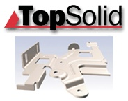

|
 TopSolid;
akýllý hybrid (katý&yüzey) modelleme sistemi sunmaktadýr.
Sistem hybrid modelleme dýþýnda freeform yüzeyler ile çalýþma
imkaný da saðlamaktadýr. TopSolid; parasolid tabanlý bir yazýlýmdýr.
CATIA, AutoCad (dxf,dwg), ACIS (sat,sab), IGES (igs,iges),
NEUTRAL (imp,inp), PARASOLID (x_t,x_b), STL, STEP, Solid Edge,
SolidWorks, VDA, ASCII (xyz) çeviricileri ile diðer yazýlýmlardan
data alabilir ve data gonderebilir. TopSolid;
akýllý hybrid (katý&yüzey) modelleme sistemi sunmaktadýr.
Sistem hybrid modelleme dýþýnda freeform yüzeyler ile çalýþma
imkaný da saðlamaktadýr. TopSolid; parasolid tabanlý bir yazýlýmdýr.
CATIA, AutoCad (dxf,dwg), ACIS (sat,sab), IGES (igs,iges),
NEUTRAL (imp,inp), PARASOLID (x_t,x_b), STL, STEP, Solid Edge,
SolidWorks, VDA, ASCII (xyz) çeviricileri ile diðer yazýlýmlardan
data alabilir ve data gonderebilir.
Missler;
TopSolid' Progress modülü ile müþterilerine uzun yýllardýr
progresiv kalýplarý tasarýmýnda ve imalatýnda yardýmcý olmaktadýr.
Progress; kesme ve bükme kalýplarýnýn oluþturulmasýnda güçlü,
hýzlý ve karmaþýk olmayan bir modüldür.
TopSolid'
Progress; bükme ve kesme adýmlý kalýplarýnda otomatik diþi-erkek
zýmba takýmý oluþturarak ve standart kalýp seti ve elemanlarý
kütüphanesi ile komple kalýp tasarýmý aþamasýnda kullanýcýsýna
enerji ve zaman tasarrufu saðlamaktadýr.
Yazýlým
istasyon baþýna düþen pres gücünü de pratik olarak analiz
eder. Sheetmetal fonksiyonu ile zor formlu metal levhalarýn
modellenmesinde kolaylýk saðlar.
Missler Software (Fransa) ve AutoForm Engineering (Ýsviçre)
TopSolid' Progress modülünde formlu sac metal parçalarýn açýnýmlarý
konusunda iþbirliði yaptý. TopSolid' Progress artýk formlu
sac metal parçalarýn açýnýmýnda ve komple adýmlý kalýplarýn
tasarýmýnda sektördeki liderliðini sürdürmektedir. Her iki
firmanýn ortak çalýþma yapmasýndaki asýl hedef; firmalarýn
teknolojilerini birleþerek sac kalýpçýlarýnýn ihtiyaç duyduðu
tam parametrik ve hýzlý kalýp tasarýmýný gerçekleþtirmektir.
CAD modülünde, ürünün tasarýmý üzerinde bir deðiþiklik yapýldýðýnda
bu deðiþikliðin aynen Progress modülünde de deðiþtiði görülecektir.
Missler
Software ve AutoForm birlikte çalýþarak bu parametrik yapý
altýnda progresiv kalýplama ve üretimini gerçekleþtirmiþtir.
Bu parametrik yapý, TopSolid' in diðer modülleri olan TopSolid'
Mold ve TopSolid' CAM' de mevcuttur ve baþarý ile uygulanmaktadýr.
AutoForm' un açýnýmdaki güvenilirliði ve hýzý, özellikle TopSolid'
Progress'e uyarlanmýþtýr.
Progresiv
kalýplama konusunda sektöründe öncü olan TopSolid ile, yine
formlu sac açýnýmlarý konusunda lider olan AutoForm yazýlýmýnýn
özelliklerinin birleþmesi progresiv kalýp sektörüne þu artý
deðerler katacaktýr; açýnýmda güvenilirlik, pratiklik ve zaman...
TopSolid'
Progress 2005; sac kalýplarý imalatý yapan firmalar için en
ideal çözümdür. Kolay kullaným ve kýsa zamanda kalýp yapabilme,
her kalýp firmasýnýn ilk dileðidir.
Daha
fazla bilgi için: www.topsolid.com/us/products/description/topprogress.asp
Þirket profili:
3B
Dizayn Ltd. Þti. sanayinin bir çok dalýna CAD/CAM/CAE, endüstriyel
ürün tasarýmý, mekanik modelleme konularýnda hizmet vermek
için kuruldu. Endüstriyel tasarým, otomotiv, sac-metal kalýpçýlýðý,
plastik ve metal enjeksiyon kalýpçýlýðý, makine imalatý, talaþlý
ve talaþsýz imalat, kuyumculuk, düðme ve aksesuar, reklam
sektörleri hizmet verdiklerimizin sadece bir kýsmýdýr.
Misyonumuz:
3B
Dizayn Ltd. Þti., konusunda, firmanýzýn en önemli destekçisi
olmayý hedeflemektedir. Biz sadece bir yazýlým distribütörü
deðiliz. Eðitimlerimiz sýrasýnda varolan projelerinizde sizlere
destek vererek daha kýsa zamanda ve daha ekonomik üretim yapmanýzý
saðlamakla en iyi hizmeti sunma amacýndayýz. Üretim endüstrisi
her zaman geliþmekte ve deðiþmektedir. Firmanýzýn bu deðiþiklikler
sýrasýnda en iyi imkanlara sahip olmasýný istiyoruz
Missler
Software hakkýnda:
Missler Software; CAD, CAM ve ERP çözümlerini kendi bünyesinde
üreten dünyadaki ender firmalardan birisidir. Missler 'in
yazýlým çözümleri þu alanlarda müþterilerine hizmet vermeye
devam etmektedir: TopSolid, TopManufacturing ve Goelan. Missler
Software tümleþik olarak tek bir çatý altýnda, mekanik mühendislik
(genel mekanik tasarým, özel makineler, takým sanayi, ýsýtma
sanayi .) sheet metal ve mobilya endüstrisi alanlarýnda çözümler
sunar. Missler Software; Fransa da en büyük ikinci yazýlým
firmasýdýr.
Daha detaylý bilgi için web sayfamýzý ziyaret ediniz.
Ýrtibat:
3B
Dizayn San. Tic. Ltd. Þti.
PERPA Ticaret Merkezi B Blok K.13 No:2518 - 2525
Okmeydaný Þiþli Ýstanbul
Tel: (212) 320 94 90
www.3bdizayn.com.tr
|